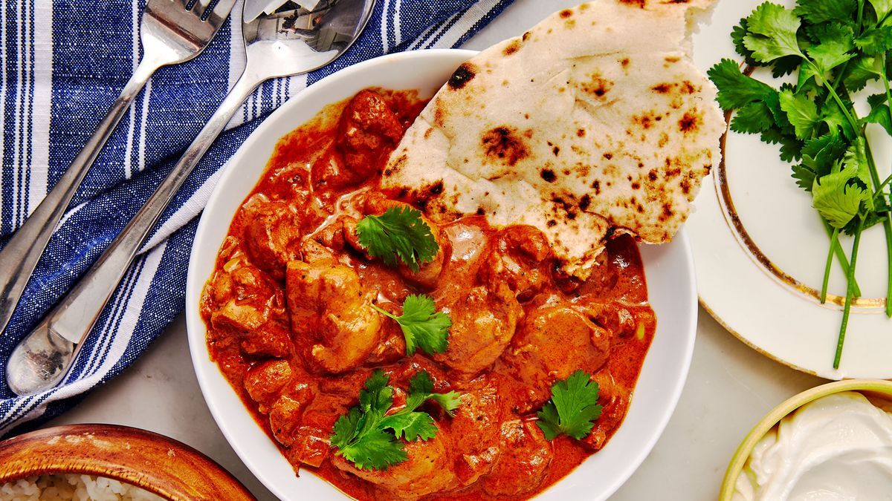

BUTTER CHICKEN RECIPE

INGREDIENTS
- Boneless chicken: 500 grams, cut into pieces
- Yogurt: ½ cup
- Lemon juice: 2 tablespoons
- Red chili powder: 1 teaspoon
- Turmeric powder: ½ teaspoon
- Garam masala: 1 teaspoon
- Ginger-garlic paste: 1 tablespoon
- Butter: 3 tablespoons
- Chopped onion: 1 large
- Tomato puree: 1 cup
- Cashew paste: 3 tablespoons
- Heavy cream: ¼ cup
- Kasuri methi (dried fenugreek leaves): 1 teaspoon
- Salt to taste
- Chopped coriander leaves for garnish
Method
- Marinate chicken with yogurt, lemon juice, red chili powder, turmeric powder, garam masala, ginger-garlic paste, and salt. Let it marinate for at least 30 minutes.
- Heat butter in a pan. Add chopped onion and sauté until golden brown.
- Add marinated chicken and cook until it's almost done.
- Add tomato puree, cashew paste, and kasuri methi. Simmer for 10-15 minutes.
- Finish by adding heavy cream and simmer for a few more minutes.
- Garnish with chopped coriander leaves and serve hot with naan or rice.
Butter Chicken is Ready!!!